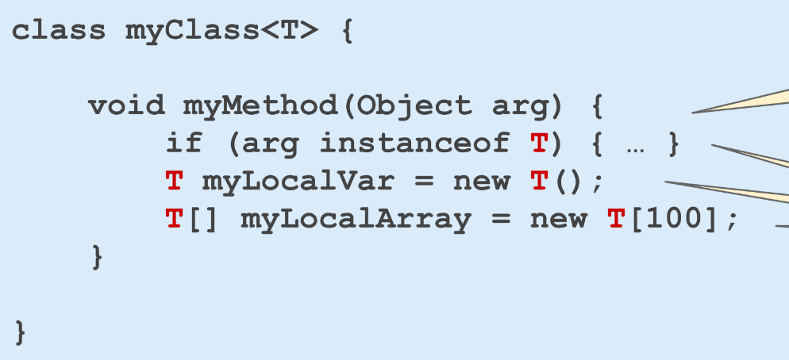

Java
- JVM is a stack based machine (not register based machine) → every operations and variables are on the stack.
- The choice was carried on because at the beginning it was a web language. Supposed to run over the browser where the code was passed over the internet. Programmes written the JVM as a stack machine because statistically they have a much more compact size than programs written for register machines
- Javascript is called this way to exploit the popularity of Java at the time
Generics
- programms where the data types are parameters.
- Avoid duplication of code (eg. Java collection framework) and improve menagement control of data types
- They are resolved at compile time → prevent type errors (type erasure, JVM doesn’t know anything about such types, the cheks are done by the compiler).
- List<Animal> → List
- type T → upper bound, usually Object
- Cannot know compile time the type of a generic (because the info is not present)
{kind=link}

- Originally List was meant to hold references to Object instances → I need downcasting at the remove methods, and that could bring runtime time errors
List<Animal> l = new ArrayList<Animal>(); // error recognized at compile time💡
they're converted into compile-time checks and execution-time casts
- Less executable respect to C++
- Don’t know the runtime object type
Java Collections Framework (JCF)
Provide support for the most polular data structure
- Collections are elements with homogeneous types →
java.utils
- cannot be primitive types → I should use a wrapping class (eg, Integer)
- behaviour are specified by interface

- Iterable → next() and hasNext()
- Collection → Basic Operations: It includes methods for basic operations such as add(), remove(), size(), isEmpty(), and contains() and others
💡
Use the type of a collection variable an interface (so I can change the behaviour very easy)
iterableCollection.forEach(function)orfor (T i : iterableCollection)
- Java String is an immutable type
set = Collections.unmodifiableSet(set); // makes immutable
List<String> list = List.of(...) // of create immutable Lists
list.add("dsa") // ERRORFunctions and Lambda
How to rapresent it as a variable in order to pass it and create modulable code
Functional Interfaces
I can create a class to represent function → one abstract method
class myF implements Function<String, String> {
public String apply(String s) {...}
}
String result = new myF().apply("..."); // Functional InterfacesFunctional variables
Function<String, Integer> f = Integer::decode; // Class::method
int x = f.apply("123");Lambda Expression or Anonymous Function
Function<Integer, Integer> myG = (x) -> x+1;
sout(myG.apply(5));collection.forEach((x) -> sout(x));Streams
Stream<T> → Interface for a sequence elements of type T, intended to undergo some processing
- streams are immutable
- their elements come form a source
- streams do not hold their elements as collection do → just an abstraction, sources maybe a collection
- Java streams can be concatenated to create a pipeline
Stream<String> ss = listOfString.stream(); // inside the Collection interface
ss.count() // aggregator- they are immutable


- reduce(list, fun2) → takes the first two elements and obtain a new list, then applied again, eg. fun2 = sum
- lazy evaluations for streams (execution of the intermediate when a terminal op is invoked) → optimized way for calculculation everything

- I connot use the stream twice after a terminal op
Parallel Streams
.parallelStream()or.parallel()from a stream. I can pass to sequential, with.sequential()- Decide by the system on how many parallel strem I get
- the partial computations are combined at the end automatically
Java Annotations
Syntactic means to add metadata to pieces of code
- Do not influence directly the code execution, but change the behaviour of external programs that use the code.
- Compiler → produce errors or suppress warning
- Compile-time and deployment-time processing → generate code or XML (@Data)
- Runtime Processing → evalued at runtime (@Entity used by the framework to update the db)
Retention:
- Source: discarded durning compilation
- Class: included in the .class file but not accessible at runtime
- Used when annotation info is needed for bytecode processing/analysis
- Runtime: retained at runtime, accessed throug reflection
Annotations can be placed into classes, interfaces, methods, methods parameters, fields and local variables
@Author {
name = "",
date = ""
}
- False sharing → when two variables are in the same cache line and invalidated (rewritten) → put the second one in memory, so the other thread must take the value in memory and not in cache → memory padding for better performances